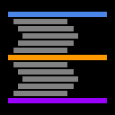
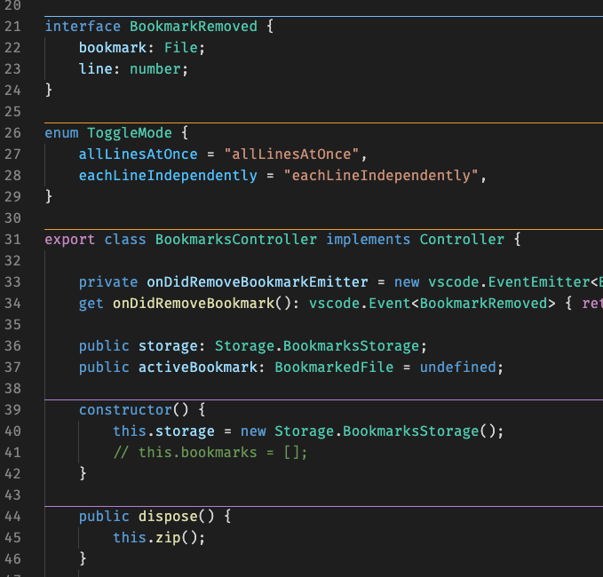

Expanded symbol and range coverage
Recent updates broaden what can be separated and make setup easier with walkthrough and broader distribution support.

SeparatorsVisual Studio Code Extension
Separators draws configurable lines above symbols and selected folding ranges, helping you read large files faster and keep structure visible while you code.

What's new in 2.9
Recent updates broaden what can be separated and make setup easier with walkthrough and broader distribution support.
Features
Draw separators for symbol kinds like classes, methods, interfaces, enums, structs, and properties.
02Render separators above comments using built-in patterns or your own regex-based language rules.
03Control location, border style and width, color, max depth, and minimum line count.
04Toggle visibility and quickly choose enabled symbols and folding ranges from commands.
Symbol separators
Separators works with languages that support Go to Symbol and lets you decide exactly which symbol kinds receive separators globally or per language.
Enable only the symbols you care about, such as methods, interfaces, enums, constructors, or properties.
Apply separators to special folding ranges such as comments, imports, and regions for additional structure cues.
Comment rules
Out of the box, Separators includes comment pattern support for slash-based, Pascal-based, and Lua-style comments. You can also add custom regex rules for other languages.
Add your own entries to separators.aboveComments.rules to support language-specific comment syntax.
{
"separators.aboveComments.rules": [
{
"name": "Lua",
"languageIds": ["lua"],
"rules": {
"singleLine": "^\\s*--"
}
}
]
}Customization
FAQ
Separators can work with any language extension that supports Go to Symbol. If the Outline view shows symbols for your file, Separators can draw symbol-based lines.
Open a file in that language and check the Outline view in VS Code. If symbols appear there, the extension has the data it needs to render separators.
Yes. Use the Select Symbols and Select Folding Ranges commands, or configure settings like separators.enabledSymbols and separators.enabledFoldingRanges globally or per language.
You can configure border width, border style, and theme colors for each category, and set separator location to above the symbol, above comments, below the symbol, or surrounding the symbol.
Yes. Add custom regex rules to separators.aboveComments.rules and include your target language IDs. You can also contribute built-in rules via the repository.
Yes! It works on all VS Code forks, ensuring compatibility and seamless integration with your favorite tools.
If you have a feature request, bug report, or suggestion, please submit it through our GitHub Issues page. We appreciate your feedback!
If you have a question that's not covered in the FAQ, feel free to reach out through our support channels at GitHub Discussions. We're here to help!
Donate
Separators is open source, and your support helps keep maintenance, improvements, and ecosystem compatibility moving forward.